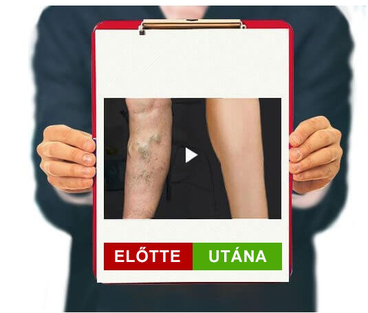
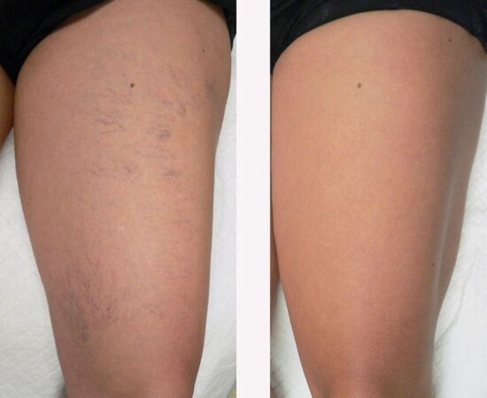
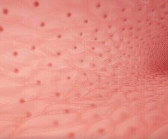

Kezelje a lábát gondosan, és mondjon
nemet a visszerekre
FÜGGETLEN TESZTELÉS
Üdv mindenkinek! Lányok, előfordul, hogy sajnáljátok azokat a negyvenes éveikben
járó nőket, akik alig bírnak járni, és mindenkit megijesztenek a kék lábukkal?
Kétszeresen is félek rájuk nézni, mert
első kézből tudom, hogy visszérrel élni kínszenvedés! Ezért szeretném megosztani,
hogyan lehet egyszer és mindenkorra megszabadulni a visszerektől.
A rossz hír először is: a visszerek leggyakrabban örökletesek, és ha valakinek a
családjában van ilyen, akkor Ön is veszélyeztetett. És most a jó hír: tudom, hogyan
lehet megszabadulni tőle.
Így néztek ki a combjaim 14 éves koromban. Igen, tizenéves koromban kezdtem
észrevenni, hogy a lábam gyorsan "kékül". A rettegett pókhálóvénák és seprűvénák kék
görbületei. Szégyelltem karcsú, sportos
lábaimat, elrejtettem őket a farmeromban. Anya azt mondta, hogy ez hormonális, és
hamarosan elmúlik. De minden évben az erek egyre nagyobbak és nagyobbak lettek, míg
végül az egész combomat
beborították.
Sokan úgy gondolják, hogy a visszerek csak esztétikai problémát jelentenek,
ezért nem tesznek semmit a betegség progressziójának megállítása érdekében,
hanem inkább elrejtik az érintett
testrészeket a ruházat alatt.
Trombózis
Az erek kitágultak és jól láthatóak a bőr alatt.
A bőrfelület károsodása
súlyos vérzést okoz.
A trofikus fekélyt a vérkeringési és szöveti
táplálkozási problémák
okozzák.
De ha csak ez lenne! Éjszaka fájtak, zsibbadtak, bedagadtak és forróak voltak a
lábaim. És ez így ment napról napra. Próbáltam könnyíteni a helyzetemen ahogy csak
tudtam. MIndennap lábfürdőt vettem,
borogatásokat készítettem, speciális krémeket és kompressziós harisnyát használtam.
De semmi sem segített. Nem szerettem a lábaimra nézni. Az ereim napról napra
nagyobbak lettek.
Sok sikertelen, a visszérektől való megszabadulásra tett kísérlet után, teljesen
elvesztettem a reményt. De a megoldás onnan jött, ahonnan nem számítottam rá.
- KORSZERŰ MEGOLDÁS
A legtöbb termék ma már csak a visszerek tüneteit, a duzzanatot és a
fájdalmat képes enyhíteni.
EZZEL SZEMBEN AHATÁSOK SZÉLES SPEKTRUMÁT
NYÚJTJA
1. Segít
enyhíteni az érrendszeri gyulladást és a kapcsolódó tüneteket.
2. Segít
serkenteni a vérkeringést és erősíti az érfalakat.
Szabadságon voltam, és megkértem az új menedzsert, hogy hozzon el nekem néhány
iratot az irodából. Véletlenül észrevette a lábamat a köntösöm alatt, és elmondta,
hogy egy hónappal ezelőtt vásárolt az
édesanyjának gélt a visszerekre, ami mindössze két hét
alatt segített rajta. Úgy döntöttem, hogy kipróbálom ezt a gélt, és megrendeltem
online. A
megrendelés elég gyorsan megérkezett, mindössze 2 nap alatt.
Textúrája miatt a gél nagyon finom, kellemes aromájú. Meglehetősen könnyű, jól
alkalmazható a bőrre. A krém 5 perc alatt teljesen felszívódik anélkül, hogy
ragacsos és kellemetlen réteget hagyna maga
után.
A gélt reggel és este alkalmaztam. Gazdaságos,
és csak egy vékony réteg szükséges a hatás eléréséhez.
És van hatása. Az első érzés az, hogy a lábak fáradtsága és nehézsége szinte azonnal
eltűnik, ez az ázsiai gázló kivonat hatása. A duzzanat szó szerint eltűnik a szem
elől. A lógesztenye révén
frissesség érzetét kelti, és a láb könnyebbé válik.
Nem fogják elhinni, de másnap kellemesen könnyűnek éreztem magam, és estig nem
dagadt be a lábam. Régebben a bokám azonnal bedagadt a munkában, de most már az
ereim sem duzzadtak annyira. Továbbra is
naponta használtam a gélt. És tudják, mit? Néhány hét múlva elfelejtettem a
fájdalmat a lábamban, és a pókhálóér kezdett kivilágosodni. Egy hónappal később rá
sem ismertem a lábaimra. A megduzzadt
vénákból gyakorlatilag semmi sem maradt. A piros-kék háló a combomon pedig mintha
nem is létezett volna. Nem számítottam ilyen eredményre. A
egy
valóban jó, és ami a fő, olcsó megoldásnak bizonyult.
EGYÉRTELMŰ HATÁSA
1.Segít javítani az
érrendszer egészségét és a véráramlást.
A
hatással van a szervezet
mikrokeringésére, erősíti a hajszálereket és csökkenti azok
áteresztőképességét.
2.Segít enyhíteni az
érfalak gyulladását, az erek sokkal kevésbé válnak
láthatóvá a bőr alatt.
Ennek köszönhetően helyreállítja a vérkeringést, és ezáltal serkenti
a szív, az agy és a belek munkáját.

ElőtteUtána
A gélben lévő természetes kivonatok javítják a vérkeringést. Ilyen módon a gél nem
csupán segít eltávolítani a kékes vénákat, hanem elősegíti a probléma megelőzését
is. A gél egy hónapos használata
után megszabadultam a visszerek minden jelétől. El sem tudom mondani, mennyire
boldog vagyok, hogy megcsodálhatom a karcsú és gyönyörű lábaimat. Ez egy
leírhatatlan érzés! Ítélje meg a különbséget
saját maga:

Végre felhagytam azzal, hogy hosszú szoknyák és nadrágok alá rejtsem a lábaimat, és
örömmel viselek minit. Ha ismeri a nehéz lábak, a duzzanat, a szörnyen kidudorodó
vénák érzését, és már nem tudja,
hogyan szabaduljon meg tőlük, próbálja ki a
gélt.
Olyan, mint a korrekciós harisnya, csak jobb. Gondoskodjon a lábáról, és meg fogja
köszönni.
hatása
LÉPÉSRŐL LÉPÉSRE:
1. A
VÉRKERINGÉS JAVÍTÁSA
A visszerek kialakulását rossz keringés kíséri, ami vérrögök
kialakulásához vezet. Alapvetően a vérkeringés alulról felfelé
halad, a lábaktól a mellkasig. Stagnálás esetén a vér nagy
része az alsó végtagokban marad. A
segít normalizálni a vérkeringést, megakadályozza a vérrögök
kialakulását és biztosítja az érrendszeri táplálkozást.
A
erősíti az érbillentyűket, normalizálja a vérkeringést és biztosítja
az erek táplálását.
2.AZ ÉRFALAK SZERKEZETÉNEK ERŐSÍTÉSE
Érbetegség esetén az erek belső rétegének
sejtjei meggyengülnek, és a falak elvékonyodnak.
A gél összetevői segítenek megerősíteni az endothel réteget,
stabilabbá és rugalmasabbá teszik az ereket. A gél pozitív hatással
van a vénák falára.

3. A
FÁJDALOM ÉS A KÉNYELMETLENSÉG MEGSZÜNTETÉSE
A vénák duzzanata és gyulladása, amelyben a vér és a vérrögök
stagnálnak, kétségtelenül kellemetlenséget okoz és zavarja az
életminőséget.
A gél nemcsak a fájdalom okára hat, ami hosszú távú pozitív hatást
fejt ki, hanem a gesztenye, az ázsiai gázló és csodabogyó
kivonatoknak köszönhetően enyhülést is hoz.
Hozzászólások 10
Mária
Ez aztán eredmény! Soha nem gondoltam volna, hogy a gél önmagában
ilyen módon át tudja alakítani a lábaimat. 😊
Rita
Én is nagyon visszeres vagyok, meg fogom rendelni ezt a gélt, remélem
segít!
Krisztina
Pincérnőként dolgozom egy kávézóban. Nem szabad leülni, különben "bírságot" kapok. A műszak
alatt a lábaim megduzzadnak és fájnak. Aztán megjelennek a csomók... Eleinte, mint mindenki
más, én is a
gyógyszertárban vettem különböző krémeket, tablettákat és gyógynövényeket a fürdőkhöz. De
semmi sem segített. Hamarosan tudomást szereztem a gélről.
Megfizethető és sokkal hatékonyabb, mint bármi, amit eddig kipróbáltam. Nem hiszem, hogy
sokáig bírtam volna ezt a munkát, ha nincs ez a gél. Régebben úgy éreztem, mintha ólomból
lennének a lábaim, de most
egyáltalán nem vagyok fáradt. A különbség több mint észrevehető!
Réka
Tényleg ilyen hatékony a gél? El sem hiszem...
Szilvia
Én sem hittem el, amíg ki nem próbáltam. Három évvel ezelőtt problémáim voltak a lábammal:
duzzanat, duzzadt erek, égő és nehéz érzés. Mindenféle dolgot kipróbáltam, már azt hittem,
semmi sem segít. De nemrég
egy orvos ajánlott nekem egy új terméket, és azt mondta, hogy segítenie kell. A
egy hónap alatt megszabadított az összes problémától. A nehézkesség, a duzzanat és a
kidudorodó kék erek eltűntek. Ajánlom mindenkinek!
Sári
Micsoda eredmény! Nekem is ki kell próbálnom.
Veronika
Egy barátnőmtől hallottam erről a gélről, de neki nem segített. Egy
online áruházból rendelte.
Antónia
Valószínűleg hamisítványt rendelt. Én magam is régóta szenvedek a visszértől, és nem az
enyhe formájától. Csomós, duzzadt vénáim voltak, de amikor elkezdtek nagyon dagadni a
lábaim, kipróbáltam ezt a gélt!
Azóta állandó társam. Útközben és otthon. Tényleg gyorsan segít. Ezért én javaslom az
eredeti gélt,
ami így néz ki.
Elza
Nagyon köszönöm a hozzászólásokat. A vénáim évek óta zavarnak,
mindenképpen kipróbálom ezt a gélt.
Nikolett
20.12.2022
Egy hete használom a
gélt, és a lábaim kevésbé duzzadnak meg a nap folyamán, és nem fájnak annyira járás közben.
Még a pókhálóér is kevésbé látható. Remélem, hamarosan a visszereket is elfelejthetem, mint
valami rossz álmot.


Hozzászólások 10